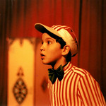

.png "Os mutantes - CC0 Domínio Público / Acervo Arquivo Nacional")
O que foi o circo dos bonecos
"Circo dos Bonecos" refere-se à companhia brasileira Cia Circo de Bonecos, que produz espetáculos de teatro de animação par a todas as idades, combinando bonecos, objetos e atuações para criar obras cô micas e poéticas sobre temas como brincadeira, sustentabilidade e relações humanas. A companhia é conhecida pela sua linguagem inovadora, que utiliza a animação de objetos e o humor para explorar a criatividade e o imaginário do público, como no espetáculo
Galeria


